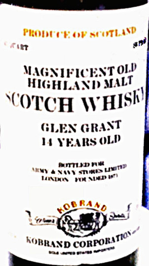
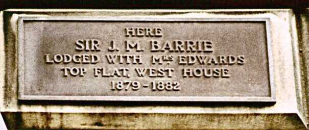

It would be too much like work to blend the
following points into the body of the Prolegomena, and besides
if I did so then anybody who wanted to read it who had read the
Prolegomena already would have to plow through it again to find
it, so I just took the easy way out and made it a supplement.
Or, if you prefer, an appendix. Or, if you are so inclined,
a semicolon. (Well, there's the ascending colon, the transverse
colon, the descending colon, and the ...)
What happened was that I finally broke down
and treated myself to a digital camera of decent quality in order
to be able to record the important research data on the labels
of those members of the Reference Collection which no longer contained
research material. I didn't want to risk soaking the labels
off and I didn't have the heart to throw the bottles out without
memoria, but the number of dead soldiers was getting uncomfortably
large, so taking pictures of the labels seemed to be a reasonable
way of crafting headstones before finally seeing what would happen
if I did try to soak the labels off and chucking the bottles regardless.
And give or take a great deal of difficulty with achieving appropriate
illumination, that more or less worked--at least to the point
of having close enough to acceptable versions of all the current
corpses that I decided it was time for a change before attempting
a more refined pass over the collection.
Having consulted with a friend who's quite
knowledgeable about digital cameras (indeed, one of the things
he's working on is a Photoshop filter for removing scratches from
digital captures of slides) before I made the camera purchase,
I'd learned that another use for decent quality ones is in fact
making digital captures of slides. So I figured I'd have a go
at that, both as a break from the headstones project and as a
way of protecting my investment in the camera in the first place.
After all, I do have a fair number of not only 35 mm but even
worse "half-frame" 35 mm slides in one of the hall closets
and making selected ones accessible via the wintel box ought to
be a good thing--and maybe even a Good Thing.
Not an unmixed blessing, though. It turns
out that capturing slides is tricky enough to begin with and then
often demands an inordinate amount of retouching and/or enhancing
to continue with. So when I came across a couple of slides so
old I'd forgotten I even had them which had vast Research Significance--and
to make matters worse, one of them was a half-frame--my carpal
tunnels nearly did finally cave in after my efforts to touch them
up appropriately. But I did want them to be good enough to "share"
because they really were extremely significant, so I let the favor
balance tilt even further askew with said knowledgeable friend
and implored him to put on the full court press: i.e., use his
special separate slide-digitizing peripheral widget on the two
slides in question in order to give me the best possible capture
with which to play (since, of course, even that mighty widget
didn't emit bits that didn't need diddling).
Naturally, with my usual luck, that led to
versions which weren't both sufficiently improvable; and unnaturally,
the half-frame one was, but the full-frame one wasn't, and you
already know, I'm sure, which was the more Significant. And naturally
I didn't have the heart to beg still another favor....
In telling the tale of woe to still another
friend (who was visiting for a bit of lab work with the Reference
Collection at the time, as it happens), however, it turned out
that he had developed some expertise in retouching and/or enhancing
and volunteered to see what he could do. Despite his best efforts,
though, it still came out looking awfully grimy, so I decided
to settle for the result of several further passes (this time
with "The GIMP") over a version I'd already churned
out which had been subjected to vicious tweaking of the contrast
and brightness, even if it does look somewhat unnatural as a result
of the obscene ministrations.
Check back sometime after, say, the first
few months of 2002, though; I subsequently told the tale to John,
who owned the original item of which the picture was taken, in
hopes he'd remember whether the label in question actually was
tinted, and it turns out he'd had the extreme good taste to've
saved the bottle and has promised to see what luck he has with
scanning or shooting it, so there might be a much better picture
available at some point in time. (To save further editing and
uploading fuss, if it comes off I'll just slide the better one
in under the same plinkable, b/t/w.)
Figure 1,
then, is the best we could do (as of now; I'll also slide a better
one in under the plinkable if anybody ever finds a "filter"
that does deal with the blotchiness which ruins the look of the
ones that weren't subjected to unnatural contrast/brightness acts,
as well as if John's efforts pay off, of course) with what started
out to be a picture of the label on the actual bottle that started
the Research, taken on the very day the Research was conceived.

Yes, it's the bottle out of which came the transcendentally smooth
Glen Grant Magnificent Old Highland Malt. And it turns out I
can now date the experience to within a month for so, since it
happens that May 1978 was embossed into the cardboard frame the
slide was mounted in. Even if it took me awhile to get around
to having the film processed, then, at least we know that the
epiphany took place in the Spring of '78, which is more than we
were sure of until we happened across the slide in question.
And then there's Figure 2. That takes a little explaining,
but before doing so it's worth noting that it was indeed the half-frame
slide from which it was captured and I'm frankly downright impressed
and nearly amazed at the amount of detail the magic peripheral
managed to wring out of it. Granted, the color is probably way
off after my tweaking, but unlike the versions I did with the
camera, you can actually make out the funny little Mrs. mark and
the range of years in this one, and that was rather impressive.

How it ties in with the Research won't be
obvious, though, unless you were a close reader of the "Malts
List" on the 'Net in the nominally good old days (or least
the days when I was its most frequent contributor). Some agitator
had sent a message containing Michael Jackson's "scores"
for several whiskies and Jackson had in my humble but dogmatic
opinion given Glenfarclas far too low a number. (That's the beer
and booze writing Jackson, of course, not the lips- and body-writhing
one--nor the one who makes his living talking on radio in Los
Angeles either, if you've heard of him.) My response to the provocation
was to tell The Man In The Street Story, which I happen to be
able to reproduce below, and it almost goes without saying that
Figure 2 is a picture of the very plaque that led to the story.
And even though I've been using the somewhat
awkward, inconvenient, and decidedly time-consuming " ViaVoice
" widget to spare my still touchy wrists and fingers for
the first draft of this, that's probably more than enough new
stuff. So here comes the Story, and that'll be it for the Supplement,
despite the guilt i feel over not being up to using the occasion
to goad myself into finally writing the promised/threatened tirade
about "grades" vs. "scores" that would tie
in rather neatly right after the Story:
Once upon a time (August of '89 I believe
it was, actually), I was walking through the New Town section
of Edinburgh and spotted a plaque on a building (the exact location
of which could be reconstructed if it had to be) to the effect
that in 189something Sir James Barrie had visited with Mrs. Somebody
in Flat soandso for I think it was some several months, perhaps
even more than a year's worth. Wanting to add it to my collection
of signs I found amusing, I got my tactful little half-frame 35mm
camera out of my pocket and started lining up a shot. A man who
appeared to be in his 80s came out of the door and looked quizzically
at me, so I explained that Barrie's name had caught my eye and
I thought I'd like a souvenir photo. "Ah, yes," he
said, "famous literary gent." "Indeed," I
replied, "the name did ring a bell. Or perhaps a Tinker
bell."
Perhaps because of or perhaps despite that,
we got to talking. When I mentioned that I was there both for
Festival and for Research, he asked me what my favo[u]rite malt
whisky was. I replied that two days out of five it was the [then-available]
12 year old Lagavulin and three days out of five it was the 18
year old Macallan. "Ach, too sweet," he said. "Well,"
I said, "I admit that the influence of the sherry casking
might not be to everyone's taste, and I must say I'm also quite
fond of the Glenfarclas, which is perhaps a better exemplar of
the classic Highland style." By this time, his lady wife
had joined us, and when I said that (and I really did say that),
she beamed and said "He owned the maltings!"
Now, clearly it would make a better story
had they invited me in for a dram of something special, but as
it happened they didn't. I still found it a charming and, clearly,
memorable occasion in its own right, though, and if by any chance
Michael Jackson is "lurking"--or if some agitator (I
name no names) is in touch with him offline--let the record show
that even the man in the street thinks extremely well of Glenfarclas.
© 2001 M.A. Padlipsky, 2011, 2021 William D Ricker d/b/a Literary Estate of M.A.Padlipsky